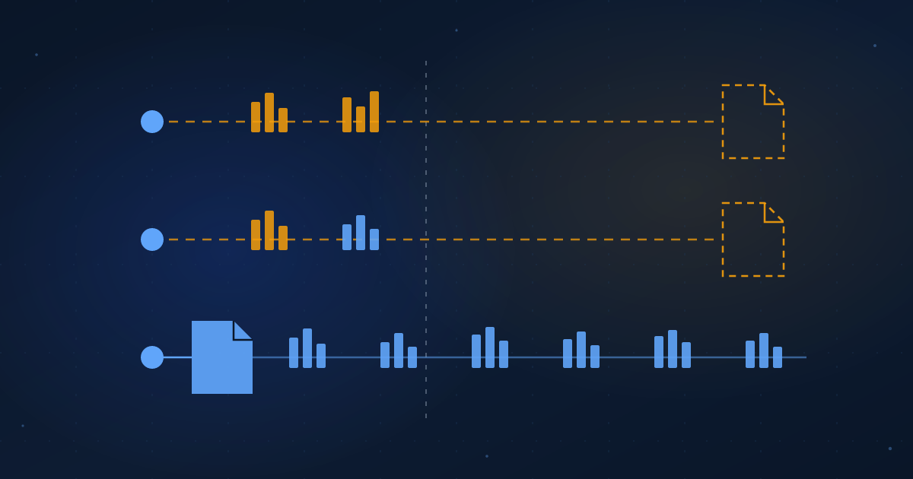

Open Weights, Closed Numbers
Three open models shipped in one week. Only one of them shipped the evidence.
Ibrahim AbuAlhaol, PhD, P.Eng., SMIEEE
AI Technical Lead
"Open-weight" used to describe a file. Last week it started describing a plan.
Three open models were announced within two days. On October 5, Reflection AI introduced Beam as "Reflection's 501B open-weight model", with the weights, technical report and model card promised "later this month" under Apache 2.0, and access until then through a waitlist [1]. On October 6, Mistral opened a public API preview of Mistral Large 4 and promised open weights "by the end of the month", under a license it has not yet named [2][3]. The same day, Google published EmbeddingGemma 2 with its weights on Hugging Face, an Apache 2.0 license and a model card that carries the benchmark tables [4]. Three announcements, three uses of the word open, and one file you can download today.
This is not an accusation. Both large models may ship on time and score as advertised. The question is what you can act on in the meantime, and the answer is less than the headlines suggest. The word open has moved from the weights to the roadmap, and the numbers that travel with a roadmap are the vendor's own.
An open-weight label at announcement time is a promise. The evidence you can act on is whatever someone outside the company has measured, and this week that existed for one model out of three.
Three releases, three kinds of evidence
Beam arrived with benchmark tables for coding, reasoning, tool use and long context, every one of them run by Reflection. The page now carries a note dated October 8: "We've updated Beam's results, and the tables above reflects the latest numbers" [1]. Three days after launch, the vendor's own chart was still moving. There is no public independent score, because outside the waitlist nobody can run the model.
Mistral Large 4 is different in one important way: the weights are not out, but the API is, so outsiders can measure. Artificial Analysis, the independent evaluator most teams check first, lists "Mistral Large 4 Preview" at 38 on its Intelligence Index, rank 65 of 216 models [5]. Read the label it assigns: "Proprietary model. The model weights are not publicly available." To an evaluator, a promised open model is a proprietary model until the file lands. Mistral's own post also quotes third-party results from vals.ai and a blind human coding evaluation by Surge AI [2], which is more than most previews offer.
EmbeddingGemma 2 is the counterexample. It is small, 740 million parameters, and that is part of why Google could afford to be complete. The card ships the weights in 16-bit, names Apache 2.0, and lists its scores on MTEB, the public embedding benchmark whose harness and leaderboard anyone can run [4][7]. By the time I checked, the card reported 135,175 downloads for the month. Every one of those is a potential independent measurement, and the first ones were already on the leaderboard.
The ladder of evidence
Put the three side by side and a ladder appears. Each rung is something you can do with a model, and each rung costs the vendor a little more control.
On the first rung you read the vendor's numbers. Their harness, their choice of competitors, their right to revise. On the second you read an outside run: someone with no stake measured the model, through an API if that is all there is. On the third you run it on your own task, which is the first number that means anything for your decision. On the fourth you run it where you control it, on weights you downloaded, on hardware you own, with a license that says you may. The fourth rung is the one an open-weight claim is about, and it is the only rung the vendor cannot take back. A revised chart is a revised chart. A downloaded checkpoint is a fact.
Why this will happen again
There is a precedent, and the name is an unlucky coincidence. In September 2024 a model called Reflection 70B, from OthersideAI and unrelated to Reflection AI, was announced as the most capable open model available. Artificial Analysis could not reproduce the claim; the public weights underperformed the Llama 3.1 70B they were built on, and by October 5 the founder acknowledged the model "didn't achieve the benchmarks originally reported" [6]. The lesson was not that anyone lied. It was that the gap between the announcement and the download is exactly where benchmark numbers go to drift.
The incentives have not changed since. Announcement timing is competitive, which is how two labs ended up one day apart. Numbers are cheapest to publish before the weights ship, because nobody can contradict them yet. And a "preview" label grants the right to revise, which Reflection used within three days. None of that is dishonest. All of it means the number you read on launch day has a shorter half-life than the number you read after the file lands.
What to wait for
The practical response is a short checklist, applied in order, before a model gets anywhere near a procurement decision.
- The file, not the post. A public repository with weights you can download without a waitlist, in a format you can load.
- The license text, not the license name. "Open-weight" is a description, and Mistral has not yet said which license applies. Apache 2.0, which Reflection promises, is a specific document with specific permissions.
- An outside run on that file, on a benchmark whose harness is public. The Artificial Analysis index, the MTEB leaderboard and the published SWE-bench harness all qualify, because you could repeat them.
- Your own run on your own task. Everything above this line tells you how the model does on someone else's problem.
EmbeddingGemma 2 cleared all four on the day it shipped. Mistral Large 4 has cleared two and lets you attempt the fourth through its API today. Beam has cleared one. That ordering has nothing to do with which model is best. It is an ordering of how much you can know right now, and that is the only ordering a buyer can use.
Conclusion
Open used to be binary: the weights were on the internet or they were not. It is now a timeline, with the label attached at the start and the file attached at the end, and the vendor's numbers filling the space between. Reading those numbers as an opening bid rather than a result is not cynicism. The vendors publish the dates themselves.
The habit to build is a small one: separate what was announced from what was delivered, every time, in writing. The companion piece to this article explains why the number on the card is not the price. This one is simpler. The number on the card is not yet the number.
What leaders should do
- Keep "announced open" and "downloadable" as separate columns in every model status report. A model is open on the day the file is public, not on the day the post is.
- Refuse production approval on vendor-run benchmarks alone. Require at least one named outside run, with a link to the harness, before a model enters a pilot.
- Keep a short evaluation of your own tasks ready to run, so that the day the weights land you can produce your own number within hours rather than weeks.
- Record the license, not the label. If the license is unnamed, the model is approved for nothing, however open the announcement sounded.
Related Articles
References & Extended Literature
- Reflection AI. (2026, October 5, updated October 8). "Introducing Beam: Reflection's 501B open-weight model." Reflection AI Blog. https://reflection.ai/blog/introducing-beam
- Mistral AI. (2026, October 6). "Mistral Large 4." Mistral AI News. https://mistral.ai/news/mistral-large-4
- Mistral AI. (2026). "Mistral Large 4" model page (public preview v26.10, "open-weight", no license named). Mistral Docs. https://docs.mistral.ai/models/mistral-large-4-0
- Google DeepMind. (2026). "google/embeddinggemma-2" model card (weights, Apache 2.0, MTEB and MMEB benchmark tables, download count). Hugging Face. https://huggingface.co/google/embeddinggemma-2
- Artificial Analysis. (2026). "Mistral Large 4 Preview" (Intelligence Index v4.3.2 score 38, rank 65 of 216, labelled proprietary while weights are unavailable). https://artificialanalysis.ai/models/mistral-large-4
- The Decoder. (2024, September 6, updated October 5). "'World's best open source model' falls short of promised performance" (Reflection 70B and the Artificial Analysis retest). https://the-decoder.com/worlds-best-open-source-model-falls-short-of-promised-performance/
- Muennighoff, N., Tazi, N., Magne, L., Reimers, N. (2022). "MTEB: Massive Text Embedding Benchmark." EACL 2023. https://arxiv.org/abs/2210.07316
- Open Source Initiative. (2024). "The Open Source AI Definition, version 1.0" (what must be available for an AI system to be called open). https://opensource.org/ai/open-source-ai-definition